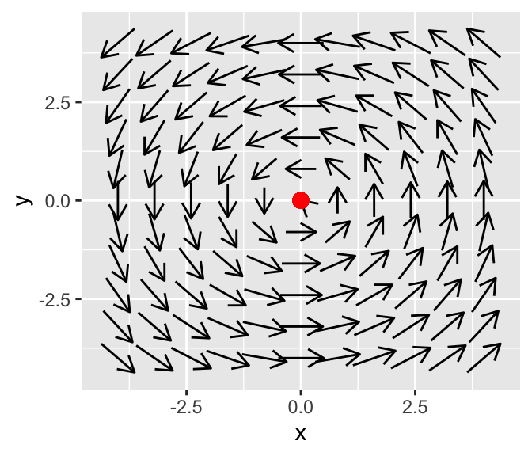
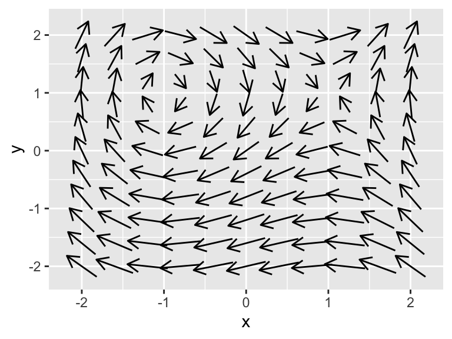
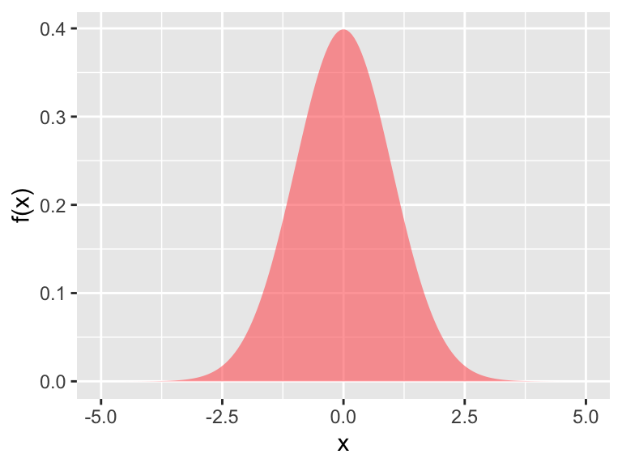
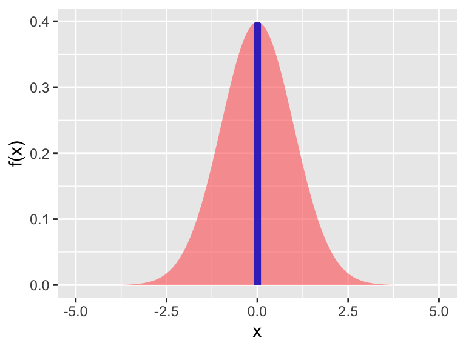

3.2 Stability of equilibrium solutions
While it is one thing to determine where the equilibrium solutions are, we are also interested in classifying the stability of the equilibrium solutions. To do this investigate the behavior of the differential around the equilibrium solutions, using facts from calculus:
- If \(\displaystyle \frac{dy}{dt}<0\), the function is decreasing.
- If \(\displaystyle \frac{dy}{dt}>0\), the function is increasing.
We say that the solution \(y=0\) is a stable equilibrium solution in this case.
Let’s apply this logic to our differential equation \(\displaystyle \frac{dy}{dt}=- y\). We know that if \(y=3\), \(\displaystyle \frac{dy}{dt}=- 3 <0\), so we say the function is decreasing to \(y=0\). If \(y=-2\), \(\displaystyle \frac{dy}{dt}=- (-2) = 2 >0\), so we say the function is increasing to \(y=0\). This can be represented neatly in the following figure, which is a phase line diagram:

Because the solution is increasing to \(y=0\) when \(y <0\), and decreasing to \(y=0\) when \(y >0\), we say that the equilibrium solution is stable, which is also confirmed by the solutions we plotted above.
In this case the equilibrium solution is still \(y=0\). We will need to consider two different cases for the stability depending on the value of \(k\) (\(k>0\), \(k<0\), and \(k=0\)):
- When \(k>0\), the phase line will be similar to the one above.
- When \(k=0\) the phase line will be:

So in this scenario, the equilibrium solution is unstable, as all solutions flow away from the equilibrium.

- Finally when \(k=0\) we have the differential equation \(\displaystyle \frac{dy}{dt}=0\), which has \(y=C\) as a general solution. For this special case the equilibrium solution is neither stable or unstable. (By all intents and purposes this is a different differential equation than \(\displaystyle \frac{dy}{dt}=k\cdot y\); something peculiar is going on here - which we come back to when discuss bifurcations.)
Let’s investigate our other differential equation \(\displaystyle \frac{dN}{dt} = N \cdot(1-N)\). This differential equation has equilbrium solutions when \(N(1-N)=0\), or \(N=0\) or \(N=1\). We evaluate the stability of the solutions in the following table:
| Test point | Sign of \(N'\) | Tendency of solution |
|---|---|---|
| \(N=-1\) | Negative | Decreasing |
| \(N=0\) | Zero | Equilibrium solution |
| \(N=0.5\) | Positive | Increasing |
| \(N=1\) | Zero | Equilibrium solution |
| \(N=2\) | Negative | Decreasing |
Notice how the points that were selected in the first column are either the the left or the right of the equilbrium solution. We can also represent the information in the table using a phase line diagram, but in this case we need to include two equilibrium solutions:

Notice how the table and the phase line diagram confirms that \(N\) is moving away from \(N=0\) (either decreasing when $ N$ is less than 0 and increasing when \(N\) is greater than 0) and moving towards \(N=1\) (either increasing when \(N\) is between 0 and 1 and decreasing when \(N\) is greater than one.
These results suggest that equilibrium solution at \(N=0\) to be unstable and at \(N=1\) to be stable.
Other than writing the words in the phase line diagram, we also use arrows to signify increasing or decreasing in the solutions.
3.2.1 Connection to local linearization.
Notice how when constructing the phase line diagram we relied on the behavior of solutions around the equilibrium solution to classify the stability. As an alternative we can also use the equilibrium solution itself.
To do this we are going to consider the general differential equation \(\displaystyle \frac{dy}{dt}=f(y)\). We are going to assume that we have an equilibrium solution at \(y=y_{*}\).
We are going to borrow local linearization (which we say when working on Euler’s method) and construct a locally linear approximation to \(L(y)\) to \(f(y)\) at \(y=y_{*}\):
\[L(y) = f(y_{*}) + f'(y_{*}) \cdot (y-y_{*}) \] We will use \(L(y)\) as an approximation to \(f(y)\). There are two key things here. First, because we have an equilibrium solution, \(f(y_{*}) =0\). The other key thing is that if we define the variable \(P = y-y_{*}\), then the differential equation translates to
\[ \frac{dP}{dt} = f'(y_{*}) \cdot P \]
Does this differential equation look familiar - it should! This is similar to the example where we classified the stability of \(\displaystyle \frac{dy}{dt} = k \cdot y\) – cool! So let’s use what we learned above to classify the stability:
- If \(f'(y_{*})’>0\) at an equilibrium solution, the equilibrium solution \(y=y_{*}\) will be unstable.
- If \(f'(y_{*}) <0\) at an equilibrium solution, the equilibrium solution \(y=y_{*}\) will be stable.
- If \(f'(y_{*}) = 0\), we cannot conclude anything about the stability of \(y=y_{*}\).